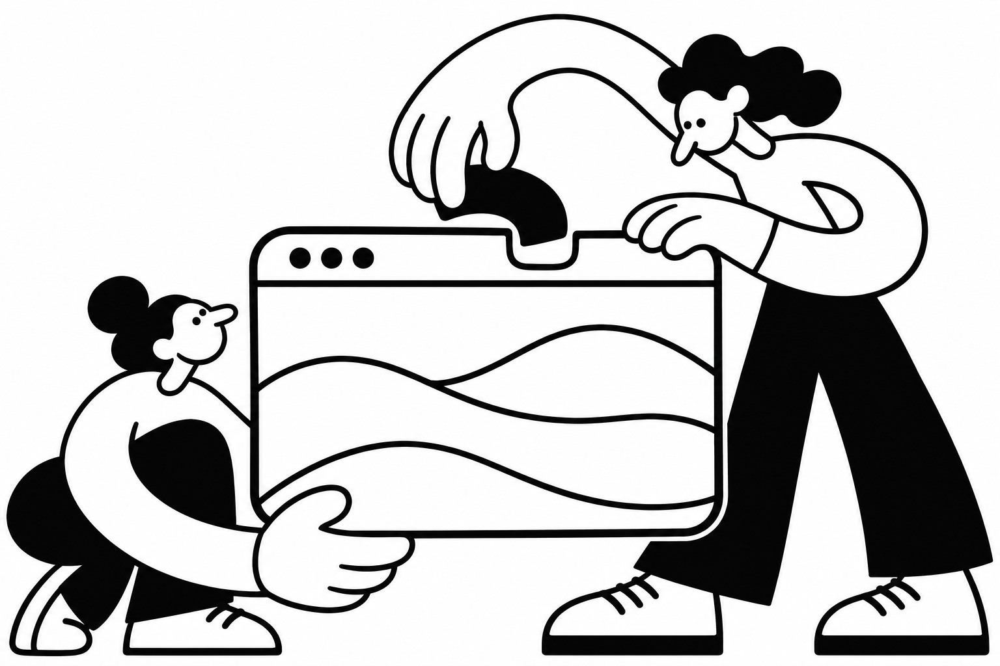
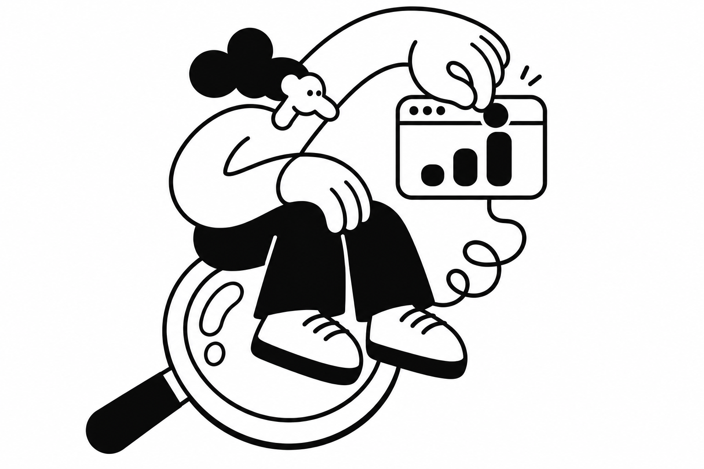
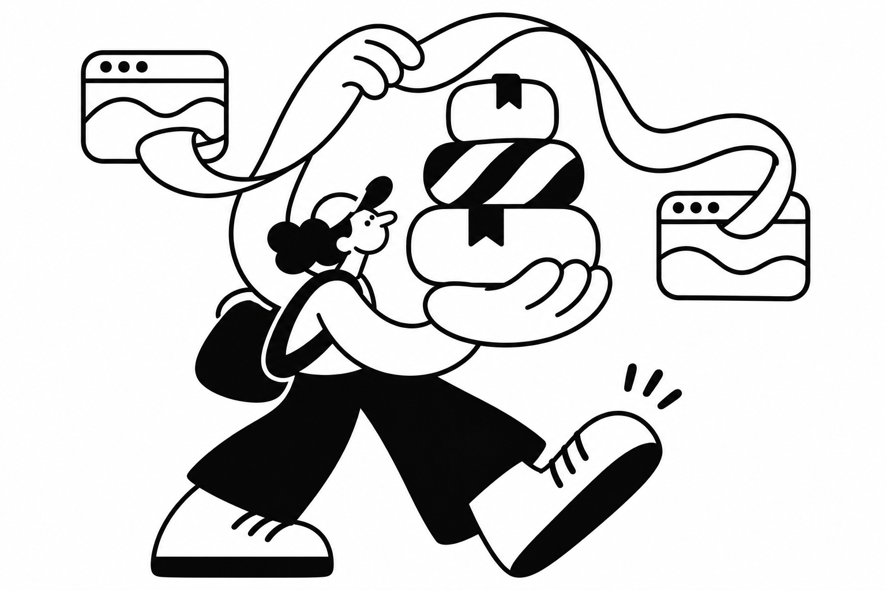

サービス・商品企画「何がいい？」に、
「何がいい？」に、
その人に合う答えを。
使う人の希望を聞いて、商品を提案。
今あるサービスに、AIの接客を。
つくるもの商品選びを助けるAI機能
◒
❧
◓
好み × 商品 × タイミングその人の「ほしい」に。
ぴったりの、2つ。
人2つ選択中。商品も押せます。✓

この先の画面、ちょっと触れます。
中央の「つなぐ」で、デモの流れを試せます。
動き出すのは、あなたの事業の可能性。
実製品・導入実績・処理性能を示すものではありません。画面で見る、AIの活用アイデア。
サービスの表側から、日々の裏側まで。
以下は想定の開発例です。導入実績ではありません。
使う人の希望を聞いて、商品を提案。
今あるサービスに、AIの接客を。
まずは、この3点から。
点在する資料を、参照元と一緒に。
いつもの社内ツールにつなぎます。
商談メモから、提案の骨組みへ。
人は、相手に合う提案を磨くことに。
たとえば、こんな一日。
現場の数だけ、つくれる仕組みがある。

検査記録を横断して、不一致の候補を整理。
確認する箇所が見える品質ダッシュボード。
写真とメモを、現場ごとの日報へ。
報告づくりから、現場を見る時間へ。
予約情報と案内をつなぎ、返信の下書きを。
スタッフは、ゲストに向き合うことに。
面談メモを、論点と確認事項に整理。
次の対話に使える、チームの記録へ。
伝票を読み取り、配送情報と照合。
入力候補から、確認して次の手配へ。
資料を横断して、要点と参照箇所を整理。
判断に必要な情報を、ひとつの場所に。
すべて想定の開発例です。画面・数値はコンセプト表現で、実績や効果の保証ではありません。
FDE型の開発
現場の理解から、実装、運用へ。
提案書の先まで、一緒に進めます。

手順も、困りごとも、例外も。
小さく動かし、現場で直す。
使い方も、次に直す方法も。
FDE：現場に入り、課題の理解から実装・運用まで担うエンジニア。
つくる、その周りも。
森の色。右の丸で、着せ替え。
技術と体験を理解して、ブランドを整える。
開発とクリエイティブを、同じチームで。
コンサル・支援会社のサービスを、開発で支える。
窓口とPMはパートナー、AI実装はAIReが。
企業が積み重ねた価値を、次のかたちへ。
ビジネス・デザイン・テクノロジーと、AIの力で。
事業と、体験と、技術をひとつに。
野村総合研究所を経て、リクルートで
HR領域のサービス企画・開発を担当。
株式会社tokoro、ERA代表。
UXデザイナー、建築デザイナー。
技術担当のプロフィールと提供体制は調整中です。案件ごとの役割・支援範囲を相談時に確認します。紹介文はPM版の掲載案に基づき、公開前に本人確認を行います。
話すところから、始めましょう。
サービスのこと。現場の手間のこと。
まだ、まとまっていなくても大丈夫。